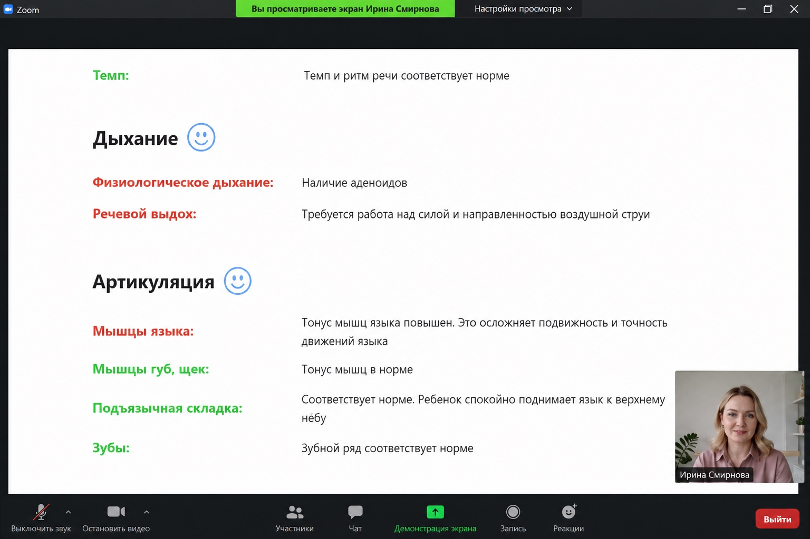

Ищу 5 учеников, которым лично поставлю грамотную речь по своей методологии
За 45 минут я разберу речь вашего ребёнка в игровой форме и отвечу на ваши вопросы. Бесплатно

Когда стоит записать ребёнка к логопеду
Не может чётко выговорить С, Ш, Р, Л
Заменяет, пропускает или искажает свистящие, шипящие, сонорные. Слышно даже в коротких словах.
Путает звуки — речь трудно разобрать даже близким
Меняет «р» на «л», «ш» на «с», переставляет слоги. Близким приходится «переводить» речь ребёнка чужим.
Говорит с «кашей во рту» — сложно выражает свои мысли
Глотает окончания, говорит быстро и невнятно. Не может объяснить, что чувствует.
Запинается, заикается — повторяет слоги, тянет звуки
Боится начинать фразу, нервничает в разговоре, иногда отказывается говорить вовсе.
Меня зовут Ирина — и я ставлю детям грамотную речь
Я не «отрабатываю урок по шаблону». Я вижу за каждым звуком конкретного ребёнка — и веду его к результату по своей методологии, которую собирала 12 лет.
-
Образование и повышение квалификации Дефектологическое образование, специальность «логопед», красный диплом МПГУ. Регулярно повышаю квалификацию — в том числе по работе с двуязычными детьми и семьями, живущими за рубежом.
-
12 лет практики, помогла более чем 1000 детей Работаю с детьми от 4 до 17 лет — онлайн, с семьями из России и из-за рубежа. Знаю, как удержать внимание и непоседы, и застенчивого ребёнка.
-
На чём специализируюсь Постановка звуков Р, Л и шипящих, запуск речи у неговорящих, коррекция заикания, дисграфия и дислексия у школьников, речь детей-билингвов.
Чтобы убедиться, подойдёт ли вашему ребёнку моя методология — приглашаю вас на бесплатный урок.
-
015 мин · знакомство
Знакомлюсь и располагаю к себе
Мягко начинаю разговор: спрашиваю про любимый мультик, игрушку, что было в саду или школе. Ребёнок раскрывается, перестаёт стесняться камеры.
-
0215 мин · игра
Играем — а я слушаю
Ребёнок отгадывает картинки, помогает героям, повторяет слова в сказке. Для него это игра. Для меня — точная фиксация всех проблемных звуков, слогов, грамматики.
-
0310 мин · упражнения
Гимнастика для языка и артикуляция
Весёлые упражнения на пальцы, дыхание, язык. Смотрю, как ребёнок держит позу, переключается между движениями, насколько подвижен речевой аппарат.
-
0410 мин · слух и память
Проверяю слух и память на слова
Игровые задания: «найди лишнее слово», «повтори за мной», «придумай рифму». Оцениваю речевой слух, память на слова и словарный запас.
-
055–10 мин · ответы вам
Отвечаю на ваши вопросы и даю план
Подключаю вас: подробно объясняю, что увидела, отвечаю на все вопросы и сразу говорю, нужны ли занятия и какая программа подойдёт.
После урока вы получаете от меня письменные рекомендации

Не «давайте созвонимся ещё раз». А конкретный документ, с которым вы уходите — и понимаете, что делать дальше.
-
Заключение по речи ребёнка Что в норме, что требует коррекции, какие звуки нарушены, есть ли особенности фонематики, грамматики, словаря.
-
План коррекции — какие звуки в каком порядке Сколько занятий нужно на каждый звук, в какой последовательности их ставить, чтобы не было «перебоев».
-
Сколько времени необходимо для улучшения речи Я оценю масштаб задачи и дам ориентир — к какому сроку стоит планировать видимый результат.
-
Домашние упражнения на первую неделю Чёткие, на 5-10 минут в день. Без «возьмите зеркало и поиграйте» — конкретные задания, которые работают.
Как моя методология решает проблемы с речью
За моей работой — авторская методика и опыт более чем с 1000 детьми. Я выстраиваю систему, где ребёнок прогрессирует от занятия к занятию, а вы видите результат.
Индивидуальная программа под ребёнка
После бесплатного урока я составляю план — какие звуки, в какой последовательности, сколько занятий. Не шаблон «всем подряд».
Игровые тренажёры и интерактив
Мои игровые задания и тренажёры: игры, герои, интерактив. Ребёнок занимается с интересом — а не «ну ещё одно занятие».
Контроль прогресса каждую неделю
После каждого занятия я присылаю короткий отчёт, а раз в неделю — общую сводку. Видно, что меняется в речи.
Материалы для дома без сложностей
Я даю короткие задания на 5-10 минут в день и видеоинструкции для вас. Чтобы между занятиями результат закреплялся.
Что говорят родители после моего бесплатного урока
Пришли с тем, что сын в 5 лет не выговаривает «р». Ирина минут 10 с ним общалась как с другом, узнала, что ему нравится, чем любит заниматься в свободное время, и я поняла — он расслабился, чего у обычного логопеда не бывает. Через 40 минут она показала мне отчёт: оказалось, ещё и шипящие смазаны, я этого не слышала. Дала чёткий план — 14 занятий, начинаем с шипящих.
Недавно переехали в другую страну — муж сменил работу. Долго искали хорошего логопеда, но никто толком не мог сказать, почему мой ребёнок говорит «с кашей во рту». Решила записаться на бесплатный урок к Ирине. В конце мне по пунктам ответили, где у ребёнка проблемы и как с этим работать. Я благодарна Ирине и её методике за то, что нашла причину проблемы.
Дома мы говорим на русском, но Миша постоянно путал б-п, д-т при письме. На бесплатном уроке Ирина просто поиграла с ним в «найди лишнее слово». Я сначала думала — а где собственно проверка? В конце всё разобрала по полочкам: фонематика страдает, дисграфия начинается. Без её взгляда я бы просто подумала, что Миша плохо выучил правила.
У дочки заикание после переезда. Из-за этого очень сильно стесняется говорить, дети смеются над ней. Боялись, что онлайн не сработает — ей и так с чужими тяжело. Ирина оказалась очень внимательным профессионалом, дочь с огромной радостью просидела весь урок и вышла со смехом — настолько ей понравилось. Получили подробные рекомендации, что делать дома прямо сейчас, до первых занятий.
Частые вопросы родителей
01 Это правда бесплатно? Без скрытых условий?
Да, полностью бесплатно. Это бесплатный урок: я знакомлюсь с ребёнком, оцениваю речь и выдаю вам письменные рекомендации. Понравится — расскажу, как я дальше веду занятия. Не понравится — навязывать ничего не буду.
02 Как онлайн-логопед может проверить речь? Это же не вживую
Через камеру я слышу звуки и вижу артикуляцию не хуже, чем в кабинете. Для постановки звуков и автоматизации этого достаточно — это подтверждают исследования и мой многолетний опыт онлайн-работы. Сложные случаи (например, тяжёлую дизартрию) обсужу с вами заранее.
03 Мой ребёнок не сидит на месте 45 минут — это вообще получится?
Получится. Я не превращаю занятие в проверку — мы играем, и время проходит незаметно. Каждые 5-10 минут новая активность: игра, картинка, упражнение, разговор. Устанет — сделаю перерыв, занятие можно растянуть без доплаты.
04 Что нужно для занятия технически?
Ноутбук, планшет или компьютер с камерой и микрофоном. Скачивать ничего не надо — ссылку пришлю заранее. Нужен стабильный интернет. Если что-то не заработает — я помогу вам подключиться, это пара минут.
05 С какого возраста можно записываться?
С 4 лет — это оптимальный возраст для онлайн-урока: ребёнок уже способен удерживать внимание 45 минут. Берём детей до 17 лет: подростковая логопедия не менее важна — постановка звуков, заикание, дисграфия и техника речи перед публичными выступлениями.
06 А если на уроке окажется, что всё в порядке?
Так и скажу — и мы порадуемся вместе. Навязывать занятия «на всякий случай» не буду. Если ребёнок развивается по норме, вы уйдёте со спокойной совестью и письменным заключением, что всё в порядке.
07 А если ребёнок не найдёт со мной контакт?
Скажите мне сразу — контакт с ребёнком для меня главное. Я подстроюсь под его характер, сменю формат и темп, а если нужно — проведу ещё одно занятие бесплатно, чтобы он привык. Обычно на моих уроках дети раскрываются за первые 5 минут.
Запишите ребёнка на бесплатный урок со мной
Напишите мне в мессенджер — согласуем удобное время. Урок проведём в ближайшие 2–4 дня.
- 45 минут один на один со мной — бесплатно
- Письменное заключение и план коррекции по итогам
- Пошаговый план развития речи на первую неделю — в подарок